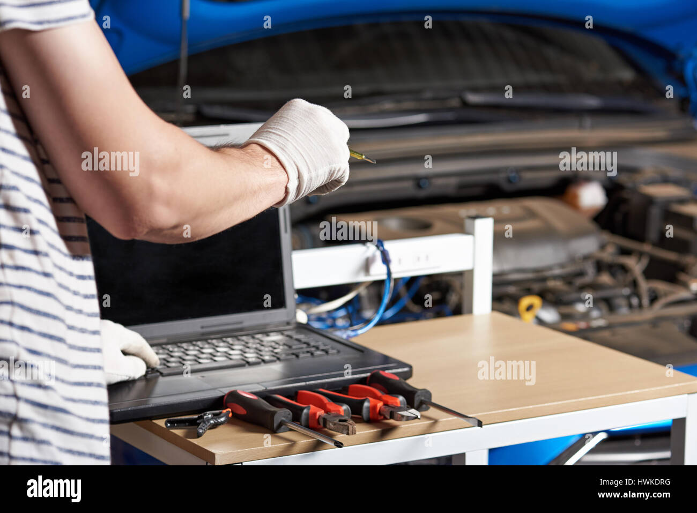
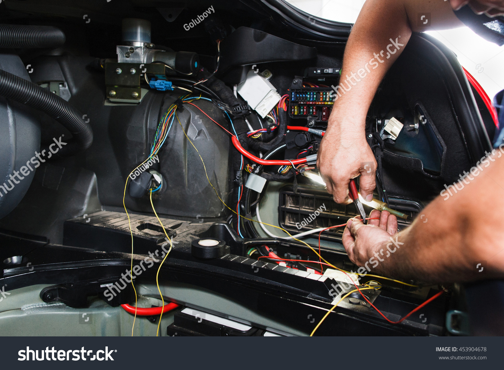
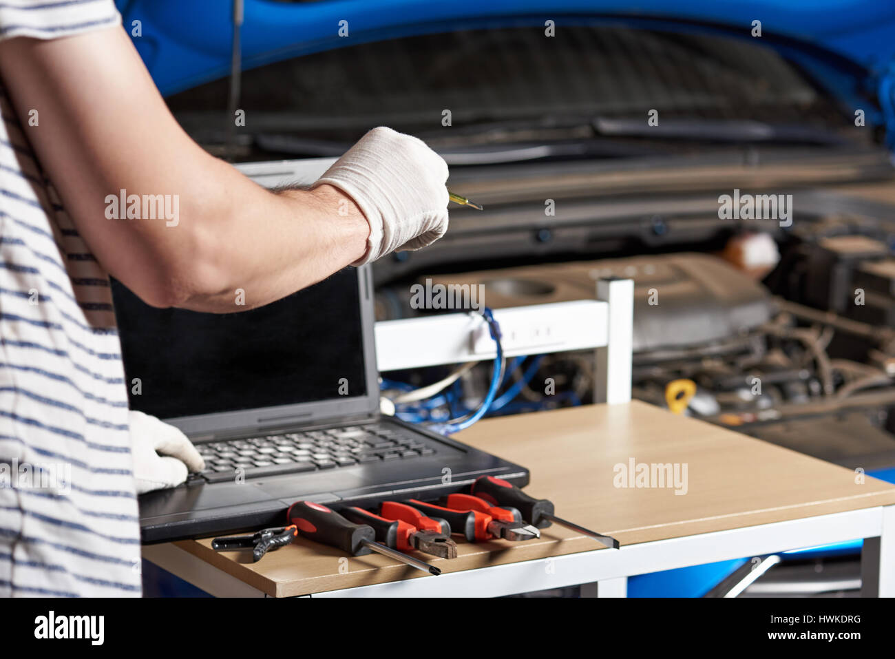
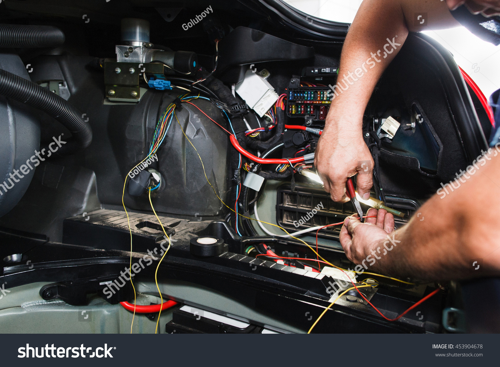

Nuestros Servicios
BENEFICIARIOS
Nuestro servicio es accesible para todas la personas e instituciones en general
- Empresas e instituciones públicas o privadas.
- Sindicatos de transporte urbano, provincial o departamental.
- Propietarios de vehículos particulares.
Servicios
La empresa se enfocara en brindar servicios de:
- Rastreo satelital en tiempo real
- Ruteo o seguimiento de las rutas realizadas
Para proteger los vehículos de situación:
- robo,
- secuestro
- extravió
Para ello utilizaremos un celular que estará con internet y una aplicación de rastreo en tiempo real si el vehículo es reportado:
- como extraviado le ayudaremos a localizarlo
- como robo hacemos el seguimiento correspondiente con la policía
Esto hasta dar con el paradero del vehículo.
En caso de que el vehículo este siendo sometido a chapeo, con adhesivos o no se lo puede reconocer fácilmente activaremos el sistema de sonido para poder identificarlo más fácilmente
Se ofrecerá un servicio de ruteo para que pueda conocerse en por los lugares que estuvieron circulando los automóviles
Contara con una bateria integrada lo cual le permitira seguir activo(en caso deque le quiten la baetria al vehiculo)
el dispositivo estara ubicado en una zona oculta tendra una coneccion a los dipositivo de sonido(en caso de que el veiculo sea modificado
estructural en la parte exterior o cambio de color)esto servira par identificar el vehiculo.
 


